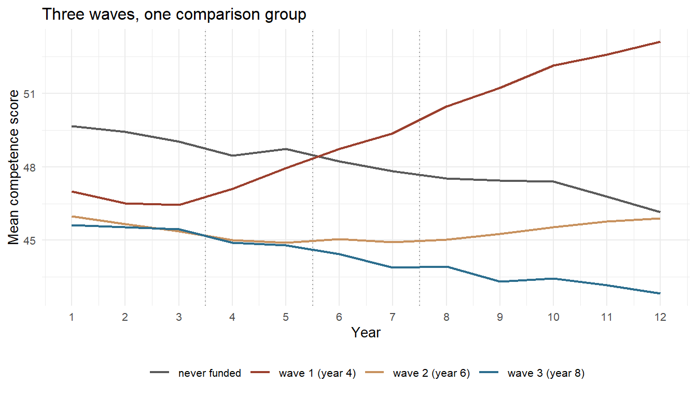
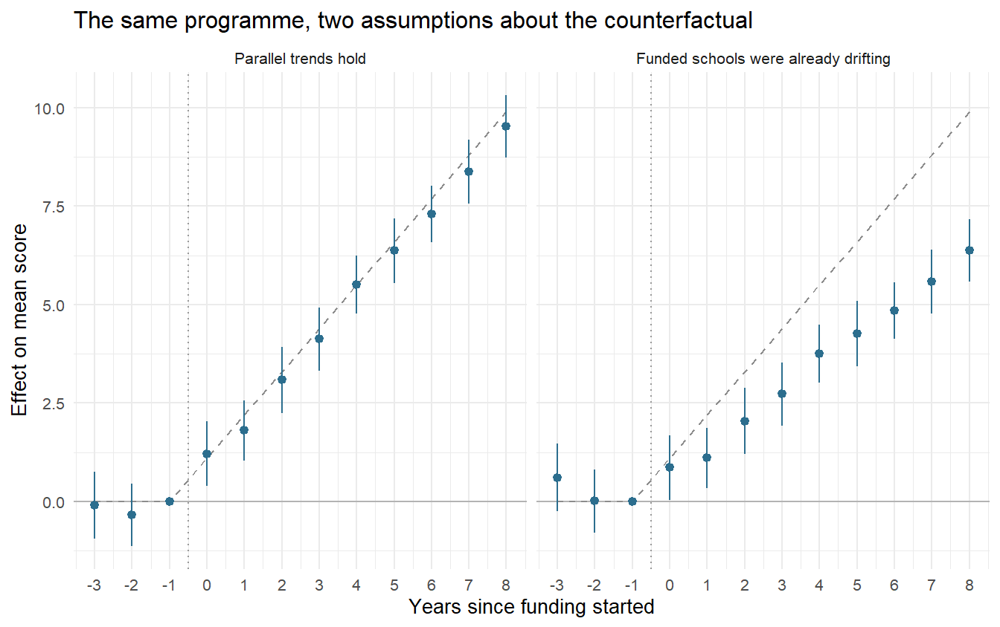
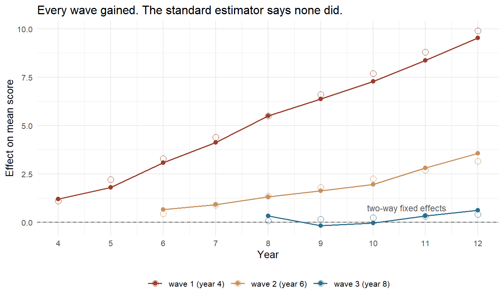

9.3 Difference-in-Differences
Comparing changes across groups and time
In August 2024 Germany began spending twenty billion euros on about four thousand schools. The Startchancen-Programm runs for ten years, splits the money evenly between the federal government and the Länder, and is aimed squarely at schools in the hardest circumstances: money for buildings, a discretionary Chancenbudget for each school, and staff for multi-professional teams.179 The stated target is arithmetic rather than rhetorical — halve the share of pupils who fail to reach the minimum standard in reading and mathematics. In the last national assessments that share was 18.8% in reading and 21.8% in mathematics at the end of primary school, and 22.7% and 23.6% at the end of year nine.180
Now the question this section is about. In 2032, someone will have to say whether it worked. How?
You cannot compare Startchancen schools with other schools, because they were selected for being different — that is the entire point of the programme. You cannot compare the schools with their own past, because German competence scores have been falling for a decade and a school that merely stops falling has done something. And you certainly cannot randomise: no ministry is going to draw lots for a billion euros a year.
What the evaluation consortium — led by infas, with the Leibniz Institute for Educational Trajectories, IEA Hamburg, Tübingen, Potsdam and others — proposes instead is the design in this section.181 Measure the treated schools now and again in 2029 and 2032. Build a comparison group of schools that were not selected. Then compare not the levels but the changes. Whatever made Startchancen schools different in 2026 is allowed to keep making them different, as long as it does not change over the six years in between.
That single move — subtract twice instead of once — is the most-used identification strategy in policy evaluation, and it is old. John Snow used it in 1855 on the London water supply.182 Its modern fame dates from 1994, when David Card and Alan Krueger asked what happened to fast-food employment when New Jersey raised its minimum wage and Pennsylvania did not: employment per store went from 20.4 to 21.0 in New Jersey and from 23.3 to 21.0 across the river, a relative gain of 2.76 full-time-equivalent employees, or 13%.183 Germany ran the same experiment on itself in January 2015, when a national minimum wage of €8.50 arrived in a country that had never had one, and the design has been carrying that literature ever since.184 It reaches well beyond labour economics: the staggered arrival of high-yielding wheat and rice varieties across countries is what lets economists put a number on the Green Revolution, and by extension on the work for which Norman Borlaug was given the Nobel Peace Prize in 1970.185
This section builds the design from four numbers in a table, and then spends most of its length on the two things that have happened to it recently. The first is that its central assumption turned out to be less testable than everyone believed. The second is that the standard way of estimating it turned out to be wrong whenever a programme is rolled out in waves — which is exactly how Startchancen was rolled out.186
9.3.1 The Idea in One Table
Two groups, two periods, four averages.
| before | after | |
|---|---|---|
| treated group | \(\bar{Y}_{T,0}\) | \(\bar{Y}_{T,1}\) |
| comparison group | \(\bar{Y}_{C,0}\) | \(\bar{Y}_{C,1}\) |
The treated group changed by \(\bar{Y}_{T,1} - \bar{Y}_{T,0}\). Some of that is the programme and some is everything else that happened between the two dates. The comparison group tells you what "everything else" looks like, because it experienced everything else and not the programme. Subtract:
\[\widehat{\text{DiD}} = \underbrace{\left(\bar{Y}_{T,1} - \bar{Y}_{T,0}\right)}_{\text{treated change}} - \underbrace{\left(\bar{Y}_{C,1} - \bar{Y}_{C,0}\right)}_{\text{everything else}}\]
The first difference removes everything that is fixed about a unit — a school's catchment area, its building, its decades-old reputation. The second removes everything that is common to a period — a curriculum reform, a pandemic, a change in how the test is scored. What survives is the change in the treated group that is not shared by anyone else.
This is why level differences are not a problem. Startchancen schools score lower than other schools and always did; the design does not care. What it cannot survive is a difference in trajectories. Section 9.2 needed the two groups to be comparable; this design needs only their trends to be.
The same estimate comes out of a regression, and it is worth seeing why, because every extension in this section is an extension of the regression rather than of the table.
\[Y_{it} = \alpha + \beta\, \text{Treated}_i + \gamma\, \text{After}_t + \delta\, (\text{Treated}_i \times \text{After}_t) + \varepsilon_{it}\]
\(\beta\) is the permanent gap between the groups, \(\gamma\) is what happened to everyone, and \(\hat\delta\) is the difference in differences, numerically identical to the table.
9.3.2 Parallel Trends
Definition
Parallel trends: in the absence of the treatment, the average outcome of the treated group would have changed by the same amount as the average outcome of the comparison group,
\[E\!\left[Y_{i1}(0) - Y_{i0}(0) \mid \text{Treated}\right] \;=\; E\!\left[Y_{i1}(0) - Y_{i0}(0) \mid \text{Comparison}\right]\]
Under it, the difference in differences identifies the average treatment effect on the treated.
Two further assumptions travel with it and are usually left implicit. No anticipation: the outcome in the pre-period is not already responding to a treatment that has been announced. SUTVA: the comparison units are genuinely untreated — no spillovers.
Read the left-hand side again. It contains \(Y_{i1}(0)\) for the treated group: what the treated units would have done without the programme. That quantity is never observed, in any data set, ever. Parallel trends is therefore not a statement about your data. It is a statement about a counterfactual, and it can be argued for, made plausible, probed — but not confirmed.
Parallel trends is not scale-free. If two groups have parallel trends in levels they generally do not have parallel trends in logs, and vice versa. Taking a log of the outcome is not a neutral presentational choice here; it changes the assumption you are making. Susan Athey and Guido Imbens made this the motivation for an entire alternative model, changes-in-changes, which asks for something invariant to monotone transformations instead.187
9.3.3 A Programme We Can Check
Section 9.2 built its own data so that the right answer would be available at the end. The same trick is worth more here, because this section has to show two estimators disagreeing about a number, and there is no way to referee that without knowing the number.
library("fixest") # fast fixed-effects regression, event studies, Sun-Abraham
library("did") # Callaway and Sant'Anna group-time treatment effectsThe fictional programme below is Startchancen-shaped: schools are selected because they are struggling, the money arrives in three waves, and the effect builds up the longer a school has been in the programme.
simulate_schools <- function(n_cohort = 150, n_never = 75, years = 12,
seed = 7, divergent = 0) {
set.seed(seed)
# --- three funding waves plus schools that never get in ---------------
cohort <- c(rep(c(4, 6, 8), each = n_cohort), rep(0, n_never))
n <- length(cohort)
# funded schools start lower - that is why they were chosen
start <- rnorm(n, 50, 6) - 4 * (cohort > 0)
# effects build with exposure, and the early waves gain fastest
gain <- c("4" = 1.10, "6" = 0.45, "8" = 0.08)[as.character(cohort)]
gain[is.na(gain)] <- 0
d <- expand.grid(school = seq_len(n), year = seq_len(years))
d$cohort <- cohort[d$school]
d$exposure <- ifelse(d$cohort == 0, 0, pmax(0, d$year - d$cohort + 1))
d$effect <- gain[d$school] * d$exposure
# what every school would have scored without the programme:
# a common national decline, plus (optionally) a divergent drift
d$y0 <- start[d$school] - 0.30 * (d$year - 1) +
divergent * (-0.35) * (d$year - 1) * (d$cohort > 0) +
rnorm(nrow(d), 0, 2)
d$y1 <- d$y0 + d$effect
d$score <- ifelse(d$exposure > 0, d$y1, d$y0)
d$funded <- as.integer(d$exposure > 0)
d[order(d$school, d$year),
c("school", "year", "cohort", "exposure", "funded", "score",
"y0", "y1", "effect")]
}
schools <- simulate_schools()
schools %>%
group_by(cohort) %>%
summarise(schools = n_distinct(school), first_funded_year = first(cohort))
#> # A tibble: 4 × 3
#> cohort schools first_funded_year
#> <dbl> <int> <dbl>
#> 1 0 75 0
#> 2 4 150 4
#> 3 6 150 6
#> 4 8 150 8One row is one school in one year. score is the school's average competence score on the familiar test metric — a scale with a national mean near 50 and a standard deviation near 10 — and because it is a school average rather than a pupil score, its year-to-year noise is small. cohort is the year the school entered the programme, with 0 meaning never. y0 and y1 are the two potential outcomes for every school-year; nothing before Section 9.3.12 touches them.
Four features are deliberate.
Selection on levels, not on trends. Funded schools start four points below the rest. That is confounding of exactly the kind matching had to work for, and here it is free.
A national decline. Everyone loses 0.30 points a year. A funded school that merely holds still is doing well, and only the comparison group can tell you that.
Effects that grow. A school in its sixth funded year is doing better than one in its first. This is realistic, and it is the ingredient that will break the standard estimator later.
Effects that differ by wave. The first wave gains 1.10 points per year of exposure, the second 0.45, the third 0.08. Real programmes are not equally effective everywhere, and the early adopters are rarely a random sample.

Figure 9.5: Average score by funding wave. The dotted vertical lines mark when each wave starts receiving money. Everyone drifts downwards; the funded schools bend away from that drift at their own start year, and the first wave bends hardest. This one figure contains everything the rest of the section argues about.
9.3.4 The Canonical Comparison
Start with the textbook case: one treated wave, one comparison group, one year before and one year after. Wave 1 enters in year 4, so year 3 is before and year 5 is after.
two_by_two <- schools %>%
filter(cohort %in% c(0, 4), year %in% c(3, 5)) %>%
mutate(funded_school = as.integer(cohort == 4),
after = as.integer(year == 5))
cells <- two_by_two %>%
group_by(funded_school, after) %>%
summarise(mean_score = mean(score), .groups = "drop")
cells
#> # A tibble: 4 × 3
#> funded_school after mean_score
#> <int> <int> <dbl>
#> 1 0 0 49.0
#> 2 0 1 48.7
#> 3 1 0 46.5
#> 4 1 1 48.0Funded schools went from 46.46 to 47.96, a gain of 1.50. Never-funded schools went from 49.03 to 48.73, a loss of 0.30. The difference in differences is 1.80.
m <- with(cells, tapply(mean_score, list(funded_school, after), identity))
(m["1", "1"] - m["1", "0"]) - (m["0", "1"] - m["0", "0"])
#> [1] 1.799936The regression gives the same number and adds an inferential apparatus. Standard errors are clustered on the school, for reasons the section returns to.
fit_2x2 <- feols(score ~ funded_school * after, data = two_by_two,
cluster = ~ school)
fit_2x2
#> OLS estimation, Dep. Var.: score
#> Observations: 450
#> Standard-errors: Clustered (school)
#> Estimate Std. Error t value Pr(>|t|)
#> (Intercept) 49.024935 0.774375 63.309048 < 2.2e-16 ***
#> funded_school -2.567119 0.909917 -2.821269 0.0052130268 **
#> after -0.296334 0.299724 -0.988689 0.3238820846
#> funded_school:after 1.799936 0.392292 4.588259 0.0000074415 ***
#> ---
#> Signif. codes: 0 '***' 0.001 '**' 0.01 '*' 0.05 '.' 0.1 ' ' 1
#> RMSE: 6.04232 Adj. R2: 0.020159Read the three coefficients as the table. funded_school is \(-2.57\): the permanent gap, and not an effect of anything. after is \(-0.30\): the national decline. funded_school:after is \(+1.80\) with a standard error of 0.39 — the estimate.
The comparison group earns its keep in the middle coefficient. Look at the funded schools alone and you see a gain of 1.50 points; a before-and-after study would report that. The comparison group says the year was worth \(-0.30\) to everybody, so the programme is credited with 1.80 rather than 1.50. Here the correction is small and upward. In a year with a curriculum reform or a pandemic it can be larger than the effect itself, and of either sign.
9.3.5 Event Studies
Two periods waste the data. With twelve years there is a coefficient for every year relative to the start of funding, and that object — the event study — is where most of the credibility of a modern DiD paper lives.
\[Y_{it} = \alpha_i + \lambda_t + \sum_{k \neq -1} \delta_k \, D_{it}^{k} + \varepsilon_{it}\]
\(\alpha_i\) is a school fixed effect, \(\lambda_t\) a year fixed effect, and \(D_{it}^k\) indicates that school \(i\) is \(k\) years from its funding start in year \(t\). One relative period has to be dropped as the reference; convention is \(k = -1\), the year before the money arrives.
# a coefficient label from i() ends in its relative period: "rel::-3", "rel::4"
relative_period <- function(labels) {
as.numeric(sub(".*?(-?[0-9]+)$", "\\1", labels, perl = TRUE))
}
event_study <- function(data, first_year = 4) {
d <- data %>%
filter(cohort %in% c(0, first_year)) %>%
mutate(rel = ifelse(cohort == 0, -1, year - first_year))
fit <- feols(score ~ i(rel, ref = -1) | school + year,
data = d, cluster = ~ school)
list(fit = fit,
tidy = data.frame(rel = relative_period(names(coef(fit))),
estimate = as.numeric(coef(fit)),
se = sqrt(diag(vcov(fit)))))
}
es <- event_study(schools)
round(es$tidy, 3)
#> rel estimate se
#> rel::-3 -3 -0.092 0.434
#> rel::-2 -2 -0.342 0.408
#> rel::0 0 1.206 0.418
#> rel::1 1 1.800 0.393
#> rel::2 2 3.088 0.428
#> rel::3 3 4.123 0.407
#> rel::4 4 5.503 0.373
#> rel::5 5 6.366 0.423
#> rel::6 6 7.293 0.368
#> rel::7 7 8.378 0.416
#> rel::8 8 9.532 0.404The two pre-period coefficients are \(-0.09\) and \(-0.34\), both smaller than their own standard errors. The post-period coefficients climb from 1.21 in the first funded year to 9.53 in the ninth. The true effects, which we are not supposed to know yet, are 0 and 0 before and \(1.1, 2.2, \dots, 9.9\) after.

Figure 9.6: Event-study coefficients with 95% confidence intervals, in the world where trends really are parallel (left) and in a world where funded schools were already drifting downwards before the money arrived (right). The dashed grey line is the truth. On the right the two pre-period estimates are positive but individually insignificant - the violation is real, the diagnostic is quiet, and every post-period estimate is too low.
An event study does three jobs at once, and they are worth separating. It shows whether the effect grows, plateaus or fades. It shows whether anything happened before the treatment, which would suggest anticipation or a pre-existing divergence. And it shows the reader the whole shape rather than one summary number, which makes the paper harder to fool anybody with.
A flat pre-period is evidence, not proof, and it is evidence about the pre-period only. Parallel trends is a claim about what the treated group would have done after the treatment. Nothing in the data speaks to that directly. Two groups can move together for five years and part company in the sixth for reasons that have nothing to do with the programme — and then the design attributes the parting to the programme.
9.3.6 When Trends Are Not Parallel
The right-hand panel of the figure above comes from the same generator with one argument changed. divergent = 1 makes funded schools lose an additional 0.35 points a year throughout, before and after the money — the deprived schools were falling behind anyway. The programme's true effect is unchanged.
drifting <- simulate_schools(divergent = 1)
event_study(drifting)$tidy %>%
mutate(true = c(0, 0, 1.1 * (1:9))) %>%
round(3)
#> rel estimate se true
#> rel::-3 -3 0.608 0.434 0.0
#> rel::-2 -2 0.008 0.408 0.0
#> rel::0 0 0.856 0.418 1.1
#> rel::1 1 1.100 0.393 2.2
#> rel::2 2 2.038 0.428 3.3
#> rel::3 3 2.723 0.407 4.4
#> rel::4 4 3.753 0.373 5.5
#> rel::5 5 4.266 0.423 6.6
#> rel::6 6 4.843 0.368 7.7
#> rel::7 7 5.578 0.416 8.8
#> rel::8 8 6.382 0.404 9.9Every post-period estimate is too low, and the gap widens the further from the start you look: 0.86 against a true 1.1 in the first year, 6.38 against 9.9 in the ninth. The design has silently subtracted the ongoing divergence from the programme's effect.
The historically famous version of this runs the other way and has a name.
Ashenfelter's dip
In 1978 Orley Ashenfelter looked at the earnings of people who enrolled in American job-training programmes and found something that has shaped programme evaluation ever since: their earnings fell sharply in the year or two before they enrolled.188
It is not mysterious. People sign up for retraining after they lose a job, or after a bad year. The dip is the reason they are in the programme at all.
Now put that into the two-period table. Pick the pre-period at the bottom of the dip and the treated group will bounce back on its own — mean reversion — and the design will credit the bounce to the training. Pick it earlier and you get a different answer. The estimate depends on the choice of "before", which is a devastating thing to have to admit about a research design.
The dip is why event studies became compulsory rather than optional, and why the phrase selection into treatment on the basis of transitory shocks appears in referee reports. It also generalises well beyond training: firms adopt a new technology after a bad quarter, schools get an intervention after a bad cohort, patients start a drug after a flare-up.
9.3.7 Pre-Trend Tests Are Weaker Than They Look
The standard defence is to test the pre-period coefficients jointly and report that the test does not reject. Since we can generate as many studies as we like, we can ask how well that defence actually works.
# joint chi-square test that every pre-period coefficient is zero
pretrend_p <- function(fit, rel) {
lead <- which(rel < 0)
b <- coef(fit)[lead]
V <- vcov(fit)[lead, lead, drop = FALSE]
stat <- as.numeric(t(b) %*% solve(V) %*% b)
pchisq(stat, df = length(lead), lower.tail = FALSE)
}
pretrend_study <- function(divergent, reps = 200) {
out <- t(replicate(reps, {
e <- event_study(simulate_schools(seed = sample(1e6, 1),
divergent = divergent))
c(reject = as.numeric(pretrend_p(e$fit, e$tidy$rel) < 0.05),
est = e$tidy$estimate[e$tidy$rel == 4]) # effect five years in
}))
c(rejection_rate = mean(out[, "reject"]),
mean_estimate = mean(out[, "est"]),
mean_if_test_passed = mean(out[out[, "reject"] == 0, "est"]))
}
set.seed(99)
round(pretrend_study(divergent = 0), 3) # trends really are parallel
#> rejection_rate mean_estimate mean_if_test_passed
#> 0.060 5.500 5.489
round(pretrend_study(divergent = 1), 3) # trends really are not
#> rejection_rate mean_estimate mean_if_test_passed
#> 0.360 3.727 3.611In the world where parallel trends holds, the test rejects about 5% of the time. That is exactly what a 5% test should do, and it is reassuring about the machinery: the estimate averages 5.50 against a true 5.50.
In the world where parallel trends fails, the test rejects roughly a third of the time. Two studies in three are told that their trends look parallel when they are not. And here is the part that turns a nuisance into a bias: among the studies that passed the test, the average estimate is about 3.6 against a true effect of 5.5. Passing the pre-trend test does not mark out the studies that got the right answer. If anything it selects the samples in which the pre-period noise happened to hide the drift — which are disproportionately the samples in which the post-period estimate is off.
This is Jonathan Roth's result, and it is the most useful thing to have learned about DiD in the last decade.189 A pre-trend test is underpowered against exactly the violations that matter, and conditioning the analysis on having passed one distorts the estimate that follows. "We checked for parallel trends and found none" is a much weaker sentence than it sounds, and the honest version of it reports the power of the check, not just its p-value.
The constructive response is not to abandon the design. It is to stop treating parallel trends as a binary that data can settle, and start treating the possible violation as a quantity with a size. Ashesh Rambachan and Roth's approach asks: if the post-period violation were no larger than what is visible in the pre-period — or at most \(\bar{M}\) times as large — what range of effects would remain consistent with the data?190 That produces a set rather than a point, and it makes the argument about magnitudes, which is where it belongs. It is the same move as the E-value in Section 9.2: turn an untestable assumption into a quantity a reader can dispute.
9.3.8 Standard Errors
Every regression in this section clusters on the school, and the reason is one of the most cited papers in applied economics.
Marianne Bertrand, Esther Duflo and Sendhil Mullainathan took real data, invented placebo laws that never happened, and ran the standard DiD regression on them. With conventional standard errors, the effect of a law that did not exist was significant at the 5% level in up to 45% of the placebo runs.191 The cause is serial correlation: outcomes within a unit are correlated over time, so a panel with twelve years of data does not contain twelve independent observations per school. Treating it as though it does inflates the apparent precision by a factor of several.
Clustering on the unit of treatment fixes it, provided there are enough clusters. With few — a treatment assigned at the level of sixteen Länder, say — cluster-robust errors are themselves unreliable, and the standard remedy is the wild cluster bootstrap.192
Cluster at the level at which the treatment varies, not at the level at which the data were collected. If a policy switches on for a whole Bundesland, the effective number of independent observations is the number of Länder, however many pupils are in the file. This is the mistake that most often turns a null result into a published one.
9.3.9 Everyone Starts at a Different Time
Real programmes do not switch on everywhere at once. Startchancen began with 2,125 schools in the 2024/25 school year and grows towards four thousand over the following years; the Länder legislate at different times; firms adopt technologies in waves.193 The natural generalisation of the regression is to replace Treated × After with a single indicator that is one whenever a unit is currently treated, and to absorb everything else in unit and year fixed effects:
\[Y_{it} = \alpha_i + \lambda_t + \delta\, D_{it} + \varepsilon_{it}\]
This is the two-way fixed effects (TWFE) estimator. For twenty years it was what "doing difference-in-differences" meant. It takes one line.
feols(score ~ funded | school + year, data = schools, cluster = ~ school)
#> OLS estimation, Dep. Var.: score
#> Observations: 6,300
#> Fixed-effects: school: 525, year: 12
#> Standard-errors: Clustered (school)
#> Estimate Std. Error t value Pr(>|t|)
#> funded -0.006439 0.146076 -0.044077 0.96486
#> ---
#> Signif. codes: 0 '***' 0.001 '**' 0.01 '*' 0.05 '.' 0.1 ' ' 1
#> RMSE: 2.36886 Adj. R2: 0.868806
#> Within R2: 5.047e-7The estimate is \(-0.006\), with a standard error of 0.153 and a p-value of 0.97.
A programme that lifted every wave it touched, in a data set we built ourselves, comes back as a precisely estimated zero. Not a wide confidence interval — a tight one, centred on nothing. Any evaluator would report that the programme had no effect, and the reporting would be careful and the referee would nod.
9.3.10 The Forbidden Comparison
The reason is a comparison the regression makes without being asked.
With one treated group and one comparison group there is one 2×2 table. With three waves and a never-funded group there are many, and the TWFE coefficient is a weighted average of all of them. Andrew Goodman-Bacon worked out exactly which ones.194 Some are the comparisons you meant to make: each wave against the schools that never get funded. Some compare an early wave against a later wave before the later one starts, which is also fine — the later wave is untreated then, so it is a legitimate control.
And some compare a later wave against an earlier wave that is already being treated.
compare_2x2 <- function(d, group_a, group_b, year_before, year_after) {
w <- d %>%
filter(cohort %in% c(group_a, group_b),
year %in% c(year_before, year_after)) %>%
mutate(b = as.integer(cohort == group_b),
a = as.integer(year == year_after))
cell <- with(w %>% group_by(b, a) %>%
summarise(m = mean(score), .groups = "drop"),
tapply(m, list(b, a), identity))
(cell["1", "1"] - cell["1", "0"]) - (cell["0", "1"] - cell["0", "0"])
}
c(clean = compare_2x2(schools, group_a = 0, group_b = 4, 6, 10),
forbidden = compare_2x2(schools, group_a = 4, group_b = 8, 6, 10)) %>%
round(3)
#> clean forbidden
#> 4.205 -4.393The same programme, the same two years. Compared against schools that were never funded, wave 1 gained +4.21 points. Compared against wave 1 — which by year 6 had been funded for three years and was still improving — wave 3 lost 4.39 points.
Nothing is wrong with the arithmetic. Wave 3's score rose by 0.24 points between year 6 and year 10. Wave 1's rose by 4.4 over the same stretch, because its effect was still growing. Subtract, and a programme that helped both groups reports a large negative number. The already-treated control is not a control at all: it is a treated unit whose treatment is still doing work, and that work gets subtracted from the effect you are trying to measure.
A common misreading is that the Goodman-Bacon weights are negative. They are not — they are products of variances and sample shares, and they are non-negative. What is negative is the estimand of the forbidden 2×2 itself, because it differences out a growing treatment effect. Negative weights on the underlying treatment effects are a related but distinct result, due to Clément de Chaisemartin and Xavier D'Haultfœuille, and they can make TWFE report a negative number when every single unit-level effect is positive.195
The condition under which none of this matters is worth stating plainly, because it is the condition under which twenty years of applied work was fine: TWFE is unbiased when treatment effects are constant — the same for every unit and, crucially, the same at every duration. The moment effects grow with exposure, which is the normal case for anything educational or organisational, the forbidden comparisons start pulling the average towards zero and past it.
9.3.11 Estimators That Survive Staggering
The fix, in the form given by Brantly Callaway and Pedro Sant'Anna, is to refuse to average anything until the end.196 Estimate a separate effect for every combination of funding wave \(g\) and year \(t\), each one from a clean 2×2: the wave's change from the year before it was funded, minus the change over the same years in a group that is genuinely untreated. Only then aggregate, deliberately, with weights you choose.
It is short enough to write by hand, which is the best way to see that nothing clever is happening.
att_gt_hand <- function(d, g, t) {
w <- d %>%
filter(year %in% c(g - 1, t), cohort %in% c(0, g)) %>%
mutate(treated = as.integer(cohort == g),
post = as.integer(year == t))
cell <- with(w %>% group_by(treated, post) %>%
summarise(m = mean(score), .groups = "drop"),
tapply(m, list(treated, post), identity))
(cell["1", "1"] - cell["1", "0"]) - (cell["0", "1"] - cell["0", "0"])
}
group_time <- expand.grid(g = c(4, 6, 8), t = 1:12) %>%
filter(t >= g) %>%
mutate(att = mapply(att_gt_hand, list(schools), g, t))
group_time %>%
group_by(wave = g) %>%
summarise(periods = n(), mean_att = mean(att)) %>%
mutate(mean_att = round(mean_att, 3))
#> # A tibble: 3 × 3
#> wave periods mean_att
#> <dbl> <int> <dbl>
#> 1 4 9 5.25
#> 2 6 7 1.83
#> 3 8 5 0.214Wave 1 averages +5.25 over its nine funded years, wave 2 +1.83 over seven, wave 3 +0.21 over five. Averaged over all treated school-years, the estimate is +2.91.
The package does the same thing with proper standard errors, and it wants the never-treated group coded as 0 — which is why the generator codes it that way.
cs <- att_gt(yname = "score", tname = "year", idname = "school",
gname = "cohort", data = schools,
control_group = "nevertreated", bstrap = FALSE, cband = FALSE)
aggte(cs, type = "simple", bstrap = FALSE, cband = FALSE)
#>
#> Call:
#> aggte(MP = cs, type = "simple", bstrap = FALSE, cband = FALSE)
#>
#> Reference: Callaway, Brantly and Pedro H.C. Sant'Anna. "Difference-in-Differences with Multiple Time Periods." Journal of Econometrics, Vol. 225, No. 2, pp. 200-230, 2021. <https://doi.org/10.1016/j.jeconom.2020.12.001>, <https://arxiv.org/abs/1803.09015>
#>
#>
#> ATT Std. Error [ 95% Conf. Int.]
#> 2.9142 0.206 2.5104 3.318 *
#>
#>
#> ---
#> Signif. codes: `*' confidence band does not cover 0
#>
#> Control Group: Never Treated, Anticipation Periods: 0
#> Estimation Method: Doubly Robust
aggte(cs, type = "group", bstrap = FALSE, cband = FALSE)
#>
#> Call:
#> aggte(MP = cs, type = "group", bstrap = FALSE, cband = FALSE)
#>
#> Reference: Callaway, Brantly and Pedro H.C. Sant'Anna. "Difference-in-Differences with Multiple Time Periods." Journal of Econometrics, Vol. 225, No. 2, pp. 200-230, 2021. <https://doi.org/10.1016/j.jeconom.2020.12.001>, <https://arxiv.org/abs/1803.09015>
#>
#>
#> Overall summary of ATT's based on group/cohort aggregation:
#> ATT Std. Error [ 95% Conf. Int.]
#> 2.4342 0.1991 2.044 2.8244 *
#>
#>
#> Group Effects:
#> Group Estimate Std. Error [95% Pointwise Conf. Band]
#> 4 5.2543 0.3015 4.6634 5.8453 *
#> 6 1.8341 0.2906 1.2645 2.4037 *
#> 8 0.2141 0.2842 -0.3429 0.7712
#> ---
#> Signif. codes: `*' confidence band does not cover 0
#>
#> Control Group: Never Treated, Anticipation Periods: 0
#> Estimation Method: Doubly RobustLiyang Sun and Sarah Abraham attack the same problem from the event-study side: in the ordinary specification each lead and lag coefficient is contaminated by effects from other relative periods, so an event study can show a spurious pre-trend that is nothing but treatment-effect heterogeneity.197 Their interaction-weighted estimator is one function call inside feols — with the opposite coding convention, which is a genuine trap.
# fixest wants never-treated coded OUTSIDE the range of periods,
# so that every relative period for them is negative. `did` wants 0.
staggered <- schools %>%
mutate(cohort_sa = ifelse(cohort == 0, 10000L, cohort))
feols(score ~ sunab(cohort_sa, year) | school + year,
data = staggered, cluster = ~ school) %>%
summary(agg = "att")
#> OLS estimation, Dep. Var.: score
#> Observations: 6,300
#> Fixed-effects: school: 525, year: 12
#> Standard-errors: Clustered (school)
#> Estimate Std. Error t value Pr(>|t|)
#> ATT 2.91421 0.180039 16.1866 < 2.2e-16 ***
#> ---
#> Signif. codes: 0 '***' 0.001 '**' 0.01 '*' 0.05 '.' 0.1 ' ' 1
#> RMSE: 1.92597 Adj. R2: 0.912793
#> Within R2: 0.338971Two packages, two opposite conventions for the same thing. did::att_gt() requires never-treated units to have a group value of 0; fixest::sunab() requires a value larger than the last period — the shipped examples use 10000 — because it identifies the never-treated as the cohort whose relative periods are all negative. Code them as 0 for sunab() and every relative period becomes positive, so the package reads them as always treated and silently drops them. The estimate that comes back is wrong and nothing warns you.
9.3.12 Opening the Envelope
The data frame has carried y0 and y1 all along.
funded <- schools$funded == 1
truth <- c(overall = mean(schools$effect[funded]),
wave1 = mean(schools$effect[funded & schools$cohort == 4]),
wave2 = mean(schools$effect[funded & schools$cohort == 6]),
wave3 = mean(schools$effect[funded & schools$cohort == 8]))
round(truth, 3)
#> overall wave1 wave2 wave3
#> 3.014 5.500 1.800 0.240| Estimator | Estimate | Truth | Error |
|---|---|---|---|
| Before-and-after, funded schools only | 1.56 | NA | NA |
| Two-way fixed effects | -0.01 | 3.01 | -3.02 |
| Callaway-Sant'Anna, aggregated | 2.91 | 3.01 | -0.10 |
| Callaway-Sant'Anna, wave 1 | 5.25 | 5.50 | -0.25 |
| Callaway-Sant'Anna, wave 2 | 1.83 | 1.80 | 0.03 |
| Callaway-Sant'Anna, wave 3 | 0.21 | 0.24 | -0.03 |
Two-way fixed effects reports \(-0.01\) against a true \(+3.01\). The group-time estimator reports \(+2.91\), and recovers the three waves separately at \(5.25\), \(1.83\) and \(0.21\) against true values of \(5.50\), \(1.80\) and \(0.24\).

Figure 9.7: Group-time treatment effects: one estimate for every funding wave in every year it was funded, with the truth as hollow points and the two-way fixed effects estimate as a single flat line. The line is a weighted average of everything above it and lands on zero - which is what averaging becomes when some of the weight sits on comparisons that subtract one wave's ongoing progress from another's.
The lesson is not that two-way fixed effects is broken. It is that it answers a question nobody asked: a variance-weighted blend of every available comparison, including comparisons that should never have been made. The modern estimators are not more sophisticated. They are more literal — they compute the thing you meant, one wave and one year at a time, and let you choose the average afterwards.
If you read one empirical paper published before about 2019 that uses staggered adoption, this is the first thing to check.
9.3.13 What Difference-in-Differences Cannot Do
The design is cheap, transparent and widely applicable, which is precisely why it is worth listing what it does not survive.
Anticipation. If schools knew in 2023 that money was coming in 2024 and started hiring, the pre-period is already contaminated and the reference year is not a clean baseline. The usual response is to move the reference earlier and show that the result does not move with it.
Spillovers. Comparison schools in the same city may hire the teachers that funded schools trained, or lose pupils to them. SUTVA fails, the comparison group is treated, and the estimate shrinks towards zero — or grows, if the spillover is negative.
Composition change. This one is specific to the Startchancen design and is easy to miss. The evaluation compares repeated cross-sections: year 4 in 2026, a different year 4 in 2029.198 If the programme changes who attends those schools — and a visibly improving school in a deprived area very plausibly does — then the two cohorts are not drawn from the same population, and part of the measured gain is a change in the intake rather than in the teaching. Panel data on the same pupils would not have this problem, and would have attrition instead.
Scale. Parallel in levels is not parallel in logs, as noted above. Report which one you assumed and why.
A comparison group at all. When a policy hits everybody at once there is nothing to difference against. Section 9.1 named the usual escape — build a comparison group out of weighted others, which is the synthetic control method — and noted that it buys identification with a stronger assumption than anything here.
Truly Dedicated: what happens when parallel trends only holds conditionally
A frequent situation: unconditionally the two groups were on different tracks, but given covariates — school size, share of pupils from low-income households, prior achievement — the trends look parallel. That is a weaker and often more defensible assumption, and it is where this section shakes hands with the last one.
Alberto Abadie's semiparametric estimator does exactly this: weight the comparison units by their propensity score so that their covariate distribution matches the treated group's, then take the difference in differences of the reweighted data.199 The propensity score is the same object as in Section 9.2, and it earns its place for the same reason — one number standing in for many covariates.
In did, it is an argument: att_gt(..., xformla = ~ prior_score + size), with est_method choosing between outcome regression, inverse probability weighting and the doubly robust combination of the two. Callaway and Sant'Anna's default is the doubly robust one, for the reason Section 9.2 gave: two chances to be right.
The catch is the same as always. Conditioning on covariates buys conditional parallel trends, and conditional parallel trends is still untestable. It replaces one assumption with a slightly weaker one; it does not replace assumptions with evidence.
Your Turn
Funded schools went from 46.46 to 47.96 and never-funded schools from 49.03 to 48.73.
The difference in differences is .
A before-and-after study of the funded schools alone would have reported a gain of 1.50 rather than 1.80. Why is the true answer larger than the naive one here?
An event study shows two pre-period coefficients that are not statistically significant. What does that establish?
Three waves of schools are funded in different years and the effect grows with exposure. What does two-way fixed effects do wrong?
True or false: if the treatment effect were identical for every unit and every duration, two-way fixed effects would be fine.
And the coding trap. You pass cohort = 0 for never-treated units to fixest::sunab(). What happens?
Reading
One paper covers this whole section and is written for users rather than econometricians: Jonathan Roth, Pedro Sant'Anna, Alyssa Bilinski and John Poe's synthesis of the recent literature, which ends with a practical checklist.200 For the design at its most persuasive, read Card and Krueger's original minimum-wage study and then Dustmann and co-authors on the German minimum wage, which reaches a different conclusion about employment and a more interesting one about where workers ended up (Cunningham, 2021).201
Difference-in-differences buys comparability out of timing. It tolerates any amount of pre-existing difference in levels and asks only that the two groups would have moved together — an assumption about a counterfactual, which the pre-period can make plausible but cannot establish, and which a pre-trend test checks with much less power than its p-value suggests.
Where treatment arrives in waves, the estimator matters as much as the design: the standard two-way fixed effects regression silently uses already-treated units as controls, and this section's simulated programme shows it converting a three-point gain into a precisely estimated zero. Estimate wave by wave and year by year, then choose the average yourself.
Section 9.4 narrows the comparison differently again: instead of a date, a threshold — which is how the same Startchancen evaluation intends to check its own difference-in-differences answer.202
Readings
- Roth, J., Sant'Anna, P. H. C., Bilinski, A., & Poe, J. (2023). What's Trending in Difference-in-Differences? Journal of Econometrics 235(2), 2218-2244. The one-stop survey, with recommendations.
- Angrist, J. D., & Pischke, J.-S. (2009). Mostly Harmless Econometrics, chapter 5. The classical treatment, before the staggered-adoption literature.
- Cunningham, S. (2021). Causal Inference: The Mixtape, chapter 9 (Cunningham, 2021). Free online, with the Bacon decomposition worked through by hand.
- Huntington-Klein, N. (2022). The Effect, chapters 16 and 18. The most patient explanation of why the forbidden comparison is forbidden.
- Callaway, B., & Sant'Anna, P. H. C.
didpackage vignettes. The reference implementation, written by the authors of the method.
The Bund-Länder agreement was reached on 2 February 2024 and the programme started on 1 August 2024, running to 2034. The federal government contributes up to €1 billion a year and the Länder match it, giving €20 billion over ten years for around 4,000 schools and well over a million pupils. The three pillars are an investment programme for learning environments, a discretionary Chancenbudget for school development, and staff for multi-professional teams. Note that the widely quoted 40 / 40 / 20 key — child poverty, migration background, and inverse economic strength — governs how the federal investment funds are distributed across the sixteen Länder, not which schools are selected; individual schools are chosen by each Land using its own social index, and those indices differ. https://www.bmbfsfj.bund.de/↩︎
Shares failing the minimum standard for Germany as a whole, from the IQB Bildungstrend reports: reading and mathematics at the end of year 4 in 2021, reading at the end of year 9 in 2022, mathematics at the end of year 9 in 2024. Stanat, P., et al. (Eds.), IQB-Bildungstrend, Waxmann.↩︎
The evaluation was commissioned by the federal education ministry after an EU-wide tender and is led by the infas Institut für angewandte Sozialwissenschaft, with the Hector Institute (Tübingen), LIfBi, IEA Hamburg, the chair of empirical economics at Potsdam, Evaluation Office Caliendo & Partner and the BiB, with the IQB advising; the contract is worth close to €50 million. The design presented at the Startchancen-Konferenz in June 2026 is a repeated cross-section of year 4 and year 9 pupils at 300 programme schools in 2026, 2029 and 2032, using IQB Bildungstrend test items so that comparison values come from the national assessments, with difference-in-differences as the main design and a fuzzy regression discontinuity at the social-index admission threshold as a second. A pleasing detail for readers of Section 9.2: the Potsdam chair and the evaluation office belong to Marco Caliendo, whose implementation guide is the standard reference for propensity-score matching cited there.↩︎
Snow, J., On the Mode of Communication of Cholera, 2nd edition, John Churchill, 1855. See the box in Section 9.1; the Lambeth company moved its intake upstream between the 1849 and 1854 epidemics while its competitor did not, which is a difference in differences in everything but name.↩︎
Card, D., & Krueger, A. B. (1994). Minimum Wages and Employment: A Case Study of the Fast-Food Industry in New Jersey and Pennsylvania. American Economic Review 84(4), 772-793. New Jersey raised its minimum wage from $4.25 to $5.05 on 1 April 1992; the study surveyed 410 restaurants on both sides of the border. Full-time-equivalent employment per store went from 20.4 to 21.0 in New Jersey and from 23.3 to 21.0 in Pennsylvania, a relative gain of 2.76 employees, or 13%, with a t-statistic of 2.03.↩︎
The Mindestlohngesetz introduced a national minimum wage of €8.50 an hour on 1 January 2015. Two careful evaluations reaching different conclusions: Caliendo, M., Fedorets, A., Preuss, M., Schröder, C., & Wittbrodt, L. (2018), The short-run employment effects of the German minimum wage reform, Labour Economics 53, 46-62, https://doi.org/10.1016/j.labeco.2018.07.002, which finds moderate employment losses concentrated in marginal employment; and Bossler, M., & Gerner, H.-D. (2020), Employment Effects of the New German Minimum Wage, ILR Review 73(5), 1070-1094, https://doi.org/10.1177/0019793919889635.↩︎
Gollin, D., Hansen, C. W., & Wingender, A. M. (2021). Two Blades of Grass: The Impact of the Green Revolution. Journal of Political Economy 129(8), 2344-2384, https://doi.org/10.1086/714444. Identification comes from the staggered arrival of high-yielding varieties across countries and crops; the headline counterfactual is that a ten-year delay would have left GDP per capita in the developing world about 17% lower in 2010. Norman Borlaug received the Nobel Peace Prize in 1970 for the plant breeding behind it.↩︎
2,125 schools took part in the first school year, 2024/25; the target of roughly 4,000 is reached over the following years. A programme that arrives in waves is not an inconvenience for the evaluator — it is the situation Sections 9.3.9 to 9.3.11 are about.↩︎
Athey, S., & Imbens, G. W. (2006). Identification and Inference in Nonlinear Difference-in-Differences Models. Econometrica 74(2), 431-497, https://doi.org/10.1111/j.1468-0262.2006.00668.x.↩︎
Ashenfelter, O. (1978). Estimating the Effect of Training Programs on Earnings. Review of Economics and Statistics 60(1), 47-57, JSTOR 1924332. The name "Ashenfelter's dip" was attached later by the evaluation literature, not by Ashenfelter.↩︎
Roth, J. (2022). Pretest with Caution: Event-Study Estimates after Testing for Parallel Trends. American Economic Review: Insights 4(3), 305-322, https://doi.org/10.1257/aeri.20210236.↩︎
Rambachan, A., & Roth, J. (2023). A More Credible Approach to Parallel Trends. Review of Economic Studies 90(5), 2555-2591, https://doi.org/10.1093/restud/rdad018. Implemented in the
HonestDiDpackage, which lives on GitHub rather than CRAN.↩︎Bertrand, M., Duflo, E., & Mullainathan, S. (2004). How Much Should We Trust Differences-in-Differences Estimates? Quarterly Journal of Economics 119(1), 249-275, https://doi.org/10.1162/003355304772839588. The 45% is an upper bound across their specifications: "we find an 'effect' significant at the 5 percent level for up to 45 percent of the placebo interventions".↩︎
Cameron, A. C., Gelbach, J. B., & Miller, D. L. (2008). Bootstrap-Based Improvements for Inference with Clustered Errors. Review of Economics and Statistics 90(3), 414-427, https://doi.org/10.1162/rest.90.3.414.↩︎
2,125 schools took part in the first school year, 2024/25; the target of roughly 4,000 is reached over the following years. A programme that arrives in waves is not an inconvenience for the evaluator — it is the situation Sections 9.3.9 to 9.3.11 are about.↩︎
Goodman-Bacon, A. (2021). Difference-in-differences with variation in treatment timing. Journal of Econometrics 225(2), 254-277, https://doi.org/10.1016/j.jeconom.2021.03.014. The decomposition is implemented in the
bacondecomppackage by Evan Flack and Edward Jee.↩︎de Chaisemartin, C., & D'Haultfœuille, X. (2020). Two-Way Fixed Effects Estimators with Heterogeneous Treatment Effects. American Economic Review 110(9), 2964-2996, https://doi.org/10.1257/aer.20181169.↩︎
Callaway, B., & Sant'Anna, P. H. C. (2021). Difference-in-Differences with multiple time periods. Journal of Econometrics 225(2), 200-230, https://doi.org/10.1016/j.jeconom.2020.12.001. The
didpackage aggregates group-time effects withtype = "simple","dynamic","group"or"calendar".↩︎Sun, L., & Abraham, S. (2021). Estimating dynamic treatment effects in event studies with heterogeneous treatment effects. Journal of Econometrics 225(2), 175-199, https://doi.org/10.1016/j.jeconom.2020.09.006. Implemented as
sunab()infixestby Laurent Bergé. A third robust estimator, imputation-based, is Borusyak, K., Jaravel, X., & Spiess, J. (2024), Revisiting Event-Study Designs, Review of Economic Studies 91(6), 3253-3285, https://doi.org/10.1093/restud/rdae007.↩︎The evaluation was commissioned by the federal education ministry after an EU-wide tender and is led by the infas Institut für angewandte Sozialwissenschaft, with the Hector Institute (Tübingen), LIfBi, IEA Hamburg, the chair of empirical economics at Potsdam, Evaluation Office Caliendo & Partner and the BiB, with the IQB advising; the contract is worth close to €50 million. The design presented at the Startchancen-Konferenz in June 2026 is a repeated cross-section of year 4 and year 9 pupils at 300 programme schools in 2026, 2029 and 2032, using IQB Bildungstrend test items so that comparison values come from the national assessments, with difference-in-differences as the main design and a fuzzy regression discontinuity at the social-index admission threshold as a second. A pleasing detail for readers of Section 9.2: the Potsdam chair and the evaluation office belong to Marco Caliendo, whose implementation guide is the standard reference for propensity-score matching cited there.↩︎
Abadie, A. (2005). Semiparametric Difference-in-Differences Estimators. Review of Economic Studies 72(1), 1-19, https://doi.org/10.1111/0034-6527.00321.↩︎
Roth, J., Sant'Anna, P. H. C., Bilinski, A., & Poe, J. (2023). What's trending in difference-in-differences? A synthesis of the recent econometrics literature. Journal of Econometrics 235(2), 2218-2244, https://doi.org/10.1016/j.jeconom.2023.03.008.↩︎
Dustmann, C., Lindner, A., Schönberg, U., Umkehrer, M., & vom Berge, P. (2022). Reallocation Effects of the Minimum Wage. Quarterly Journal of Economics 137(1), 267-328, https://doi.org/10.1093/qje/qjab028. The reform raised wages without lowering employment, and moved low-wage workers towards larger and more productive firms - a reallocation that accounts for roughly 17% of the wage gain.↩︎
The evaluation was commissioned by the federal education ministry after an EU-wide tender and is led by the infas Institut für angewandte Sozialwissenschaft, with the Hector Institute (Tübingen), LIfBi, IEA Hamburg, the chair of empirical economics at Potsdam, Evaluation Office Caliendo & Partner and the BiB, with the IQB advising; the contract is worth close to €50 million. The design presented at the Startchancen-Konferenz in June 2026 is a repeated cross-section of year 4 and year 9 pupils at 300 programme schools in 2026, 2029 and 2032, using IQB Bildungstrend test items so that comparison values come from the national assessments, with difference-in-differences as the main design and a fuzzy regression discontinuity at the social-index admission threshold as a second. A pleasing detail for readers of Section 9.2: the Potsdam chair and the evaluation office belong to Marco Caliendo, whose implementation guide is the standard reference for propensity-score matching cited there.↩︎